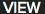
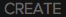
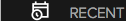
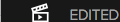

import gda_utils from sikuli import Sikuli from sikuli import * from __builtin__ import True, False import org.sikuli.basics.SikulixForJython class GDAView: def __init__(self): self.auto_launch=False self.auto_download=False self.auto_play=False self.auto_sync=False self.import_location="" self.media_folder=[] self.fails="\nCloudSettings: REPORT TESTS FAILED" self.passes="\nCloudSettings: REPORT TESTS PASSED" def evalgdaview(self): p=Pattern().similar(0.68).targetOffset(-6,0) # view_btn_selected rsettings=gda_utils.EXISTS3("VIEW","TOP",p,5) if not rsettings: self.fails += "\nFAILED to find: %s" % str(p) else: self.passes += "\nPASSED: %s" % str(p) p=Pattern().similar(0.69) # view_btn_create-unselected rsettings=gda_utils.EXISTS3("VIEW","TOP",p,5) if not rsettings: self.fails += "\nFAILED to find: %s" % str(p) else: self.passes += "\nPASSED: %s" % str(p) p=Pattern().similar(0.69) # view_btn_media-selected rsettings=gda_utils.EXISTS3("VIEW","LEFTPANEL",p,5) if not rsettings: self.fails += "\nFAILED to find: %s" % str(p) else: self.passes += "\nPASSED: %s" % str(p) p=Pattern().similar(0.69) # view_btn_recent-unselected rsettings=gda_utils.EXISTS3("VIEW","LEFTPANEL",p,5) if not rsettings: self.fails += "\nFAILED to find: %s" % str(p) else: self.passes += "\nPASSED: %s" % str(p) p=Pattern().similar(0.69) # view_btn_edited-unselected rsettings=gda_utils.EXISTS3("VIEW","LEFTPANEL",p,5) if not rsettings: self.fails += "\nFAILED to find: %s" % str(p) else: self.passes += "\nPASSED: %s" % str(p) p=Pattern().similar(0.68) # gensettings_btn_feedback rsettings=gda_utils.EXISTS3("VIEW","LEFTPANEL",p,5) if not rsettings: self.fails += "\nFAILED to find: %s" % str(p) else: self.passes += "\nPASSED: %s" % str(p) p=Pattern().similar(0.69) # view_lbl_allmedia rsettings=gda_utils.EXISTS3("VIEW","MEDIA_CONTROL",p,5) if not rsettings: self.fails += "\nFAILED to find: %s" % str(p) else: self.passes += "\nPASSED: %s" % str(p) p=Pattern().similar(0.69) # view_btn_thumbsize-min rsettings=gda_utils.EXISTS3("VIEW","MEDIA_SLIDER_CONTROL",p,5) if not rsettings: self.fails += "\nFAILED to find: %s" % str(p) else: self.passes += "\nPASSED: %s" % str(p) p=Pattern().similar(0.69).targetOffset(-2,-1) # view_btn_thumbsize-slider rsettings=gda_utils.EXISTS3("VIEW","MEDIA_SLIDER_CONTROL",p,5) if not rsettings: self.fails += "\nFAILED to find: %s" % str(p) else: self.passes += "\nPASSED: %s" % str(p) #p=Pattern("view_btn_thumbsize-slide-min.png").similar(0.69) # view_btn_thumbsize-slide-min #rsettings=gda_utils.EXISTS3("VIEW","MEDIA_SLIDER_CONTROL",p,5) #if not rsettings: # self.fails += "\nFAILED to find: %s" % str(p) #else: # self.passes += "\nPASSED: %s" % str(p) p=Pattern().similar(0.69) # view_btn_thumbsize-max rsettings=gda_utils.EXISTS3("VIEW","MEDIA_SLIDER_CONTROL",p,5) if not rsettings: self.fails += "\nFAILED to find: %s" % str(p) else: self.passes += "\nPASSED: %s" % str(p) for i in range(1,10): self.setthumbsliderlarger(i) p=Pattern().similar(0.68) # view_btn_filterby-all rsettings=gda_utils.EXISTS3("VIEW","MEDIA_CONTROL",p,5) if not rsettings: self.fails += "\nFAILED to find: %s" % str(p) else: self.passes += "\nPASSED: %s" % str(p) return p=Pattern().similar(0.68) # view_btn_filterby-videos rsettings=gda_utils.EXISTS3("VIEW","MEDIA_CONTROL",p,5) if not rsettings: self.fails += "\nFAILED to find: %s" % str(p) else: self.passes += "\nPASSED: %s" % str(p) p=Pattern().similar(0.69) # view_btn_filterby-photos rsettings=gda_utils.EXISTS3("VIEW","MEDIA_CONTROL",p,5) if not rsettings: self.fails += "\nFAILED to find: %s" % str(p) else: self.passes += "\nPASSED: %s" % str(p) p=Pattern().similar(0.68) # view_btn_filterby-clips rsettings=gda_utils.EXISTS3("VIEW","MEDIA_CONTROL",p,5) if not rsettings: self.fails += "\nFAILED to find: %s" % str(p) else: self.passes += "\nPASSED: %s" % str(p) p=Pattern().similar(0.69) # view_btn_filterby-hilights rsettings=gda_utils.EXISTS3("VIEW","MEDIA_CONTROL",p,5) if not rsettings: self.fails += "\nFAILED to find: %s" % str(p) else: self.passes += "\nPASSED: %s" % str(p) def setthumbsliderlarger(self,id): #p=Pattern("view_btn_thumbsize-min.png").similar(0.69) # view_btn_thumbsize-min rsettings=gda_utils.getregion("VIEW","MEDIA_SLIDER_CONTROL") rw= rsettings.getW() d=rw/10 w1=rw/2 w2=w1*-1 d1=d*id xx=w2+d1 print "##########%d#%d#%d#%d" % (d,w1,d1,xx) #p=Pattern("view_btn_selected.png").similar(0.68).targetOffset(-6,0) # view_btn_selected #rsettings=gda_utils.EXISTS3("VIEW","MEDIA_SLIDER_CONTROL",p,5) if not rsettings: self.fails += "\nFAILED to find: %s" % str(p) return None l=Location(xx,0) rsettings.click(l) rsettings(1) def setthumbslidersmaller(self,id): p=Pattern().similar(0.69) # view_btn_thumbsize-max rsettings=gda_utils.EXISTS3("VIEW","MEDIA_SLIDER_CONTROL",p,5) if not rsettings: self.fails += "\nFAILED to find: %s" % str(p) return None rleft= rsettings.left(id) rleft.click() ###################################### # Assumes automation window size Mac{x35,y35,w1280, h836} # for windows using Autoit we need to identify the inner region w,h relative to mac and set the win size accordingly # Win,Mac window container border widths are different # this is global region list for more accurate image query ###################################### def set_view_regions(REGION): screenregion="VIEW" subregion="TOP" rx=REGION.getX() ry=REGION.getY()#+REGION.getH()-80 rw=REGION.getW() rh=80 r=Region(rx,ry,rw,rh) #r.highlight(1) gda_utils.add_region(screenregion,subregion,r) subregion="LEFTPANEL" rx=REGION.getX() ry=REGION.getY()+80 rw=230 rh=REGION.getH()-80 r=Region(rx,ry,rw,rh) #r.highlight(1) gda_utils.add_region(screenregion,subregion,r) subregion="MEDIA_CONTROL" rx=REGION.getX()+230 ry=REGION.getY()+80 rw=REGION.getW()-230 rh=80 r=Region(rx,ry,rw,rh) #r.highlight(1) gda_utils.add_region(screenregion,subregion,r) subregion="MEDIA_AREA" r=r.below(REGION.getH()-160) #r.highlight(5) gda_utils.add_region(screenregion,subregion,r) subregion="MEDIA_SLIDER_CONTROL" rx=REGION.getX()+REGION.getW() -200 ry=REGION.getY()+100 rw=190 rh=30 r=Region(rx,ry,rw,rh) r.highlight(1) gda_utils.add_region(screenregion,subregion,r) ###################################### # for debugging in sikuli ide # # ###################################### def test_module(): gda_utils.GetEnvInfo() gpa,gpr=gda_utils.AppStart("GoPro") set_view_regions(gpr) g=GDAView() if not g: print "Error: failed to create GDAView class" return g.evalgdaview() print g.passes print g.fails ###################################### # for debugging in sikuli ide # # KEEP THIS COMMENTED when checking in to GIT ###################################### test_module()